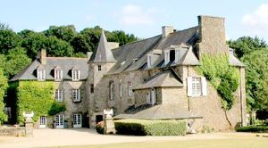
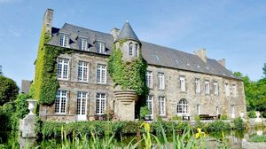
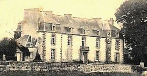
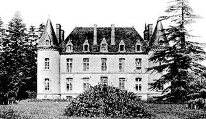
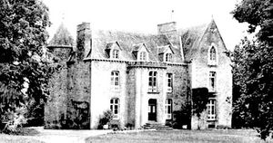
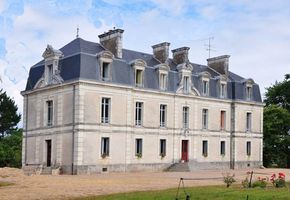

Recensement Jean-Claude Truffet
| Département | 35 — Ille-et-Vilaine |
| Canton | Combourg |
| Commune | Pleugueneuc |
| Type d'édifice | Château |
| Période d'origine | XV-XVIII-XIX |
| Coordonnées GPS | 48° 23' 50" Nord 1° 54' 09" Ouest Morinais gps 47° 45' 35" nord, 2° 20' 55" ouest |






Deux châteaux dans cet article ; Bourbansais (voir article) et la Motte Beaumanoir et Morinais, au nord cinq Km le Rouvre. MOTTE-BEAUMANOIR, fut construit au XVe siècle pour la Famille Bouvier, ancien logis acquis en 1776 par Jean Thomas de Lorgeril qui fait agrandir le château par l'ajout d'ailes à l'est et à l'ouest. Son fils, Louis de Lorgeril terminera les remaniements au XIXe siècle. Des plans indiquent qu'à la fin du XVIIIe siècle, des transformations du château ancien sont prévues, avec division des pièces en appartements et l'aménagement d'un escalier central à jour et d'un corridor permettant la distribution des chambres. L'ancien escalier à vis aurait été démoli. En 1807, Louis de Lorgeril projette une reconstruction totale du château, qui comprend également l'aménagement d'un jardin et d'un parc. La construction projetée est de style néo palladien. Ancien maire de Plesder, M. de Lorgeril a contribué au développement des comices agricoles en Ille et Vilaine: la société d'agriculture du département lui a élevé un monuments en 1852 dans le parc du château. Deux projets de galerie pour le château sont signés de Louis Richelot. Transformer en hôtel-restaurant par monsieur Bernard .
MORINAIS, le château actuel est bâti vers 1870 pour le compte de Dominique Cossé, industriel raffineur de sucre à Nantes, associé de Cossé-Duval, sur l'emplacement d'un bâtiment plus ancien, siège d'une ancienne seigneurie. ROUVRE à Cinq KM au nord le château du Rouvre Saint-Pierre de Plesguen fût reconstruit en 1786-87 pour Saturnin-Hercule du Bourblanc, conseiller puis premier avocat au Parlement de Bretagne. La chapelle Saint-Laurent, datant de 1660, fût conservée. Comparable par son plan en H allongé au château de Belle Noë en Dol de Bretagne du début du XVIIIe siècle, il s'en distingue par le traitement des toitures à la Mansart des ailes latérales. L'aménagement au début du XXe siècle des pavillons en appentis latéraux, a accentué ce parti pris. GAGE le château de Le Gage du XIX siècle, situé route de Saint-Domineuc et édifié à l'emplacement d'un ancien château ou manoir Louis XIII. Il possède une chapelle privée, une fuie circulaire et un joli puits à quatre pilastres, décoré des armes de la famille de Saint-Gilles avec la date de 1625. Le Gage possédait jadis un droit de haute justice. Propriété successive des familles Racton ou Raeton (en 1513), de Saint-Gilles (en 1625 et en 1704), du Boisbaudry (en 1716 et en 1730), de Visdelou (au XVIIIe siècle) et de France .
Motte-Beaumanoir Famille Bouvier Morinais; Famille de Dominique Cossé, Rouvre; Famille Saturnin-Hercule du Bourblanc
"
Deux châteaux dans cet article ;Bourbansais (voir article) et la Motte Beaumanoir grav 1-2 et Morinais gracv_6, au nord cinq Km le Rouvre grav-3 Gage-grav-4 Motte GPS : 48° 23' 50" Nord 1° 54' 09" Ouest Morinais gps 47° 45' 35" nord, 2° 20' 55" ouest